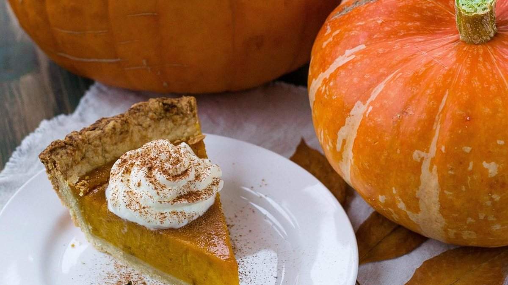
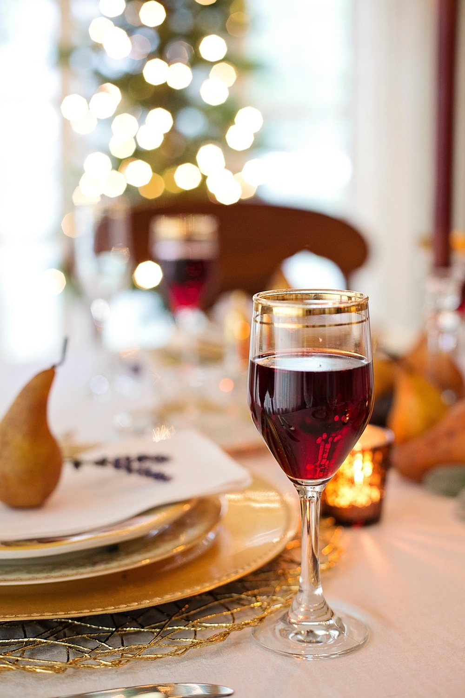

November 13, 2026 · By Pixel Punk Studio
Thanksgiving is loud. The kitchen is busy, the kids are running, the game is on, and conversations happen in three rooms at once. For an older guest with tired ears or tired legs, it is easy to end up in the quiet armchair by the window, smiling, but outside the day. Nobody means for it to happen. A couple of easy games and a real job or two are often all it takes to keep grandparents in the middle of things.
Give them a seat in the middle
Before any game, think about the chair. Put a comfortable chair with arms where the action is, near the kitchen door or at the end of the table, not in the far corner. Add a small side table for a drink and a puzzle, and good light. Being part of the day starts with being where people walk past.
8 easy Thanksgiving games for grandparents
- A large print Thanksgiving word search. Print a few copies and let grandparents and grandkids race, or solve one together while the turkey rests.
- Thanksgiving memories jar. Everyone writes a favorite Thanksgiving memory on a slip of paper; grandparents draw them and read them out, and guess who wrote each one.
- "When I was your age." The grandkids ask questions from a list: first job, first car, what Thanksgiving dinner looked like in 1965. The older the stories, the better.
- Gratitude alphabet. Go around the table and name something you are thankful for, from A to Z. Easy to join from a chair.
- Guess the pie. Small tastes of each pie or side dish with eyes closed. Grandparents make excellent judges.
- Card games. Rummy, crazy eights or go fish work across three generations. Large-number playing cards help.
- Old photo guessing game. Bring out a few old family photos and let the grandparents tell the story behind each one.
- Family trivia. Questions only the oldest guests know: where Grandpa proposed, the name of the first family dog.
Jobs that keep grandparents part of the day
- Chief taster for the gravy and the stuffing, seated at the kitchen counter.
- Table folding: napkins, place cards or a name on each card, done sitting down.
- Recipe keeper: the family recipe read out loud, step by step, for whoever is cooking.
- Grace or the toast, if they enjoy it.
- Kids' table helper: a grandparent with a stack of coloring pages and word searches keeps the little ones calm.

Small changes that help
- Turn the TV down during dinner: background noise makes conversation hard to follow.
- Large print everything: place cards, puzzles, even the menu if you make one.
- Plan the games before the meal, when energy is highest, not at 9 pm.
- Offer a quiet room with a blanket for a short rest, so leaving the table is not leaving the day.
- Sit someone next to them who will repeat the joke everyone laughed at.
Print the Thanksgiving word search
Our free Thanksgiving word search is in large print with its answer key, ready to print on letter paper before the guests arrive. For guests who need even bigger letters, our free jumbo print page has 30 point print, and the retirement word search makes a fun second puzzle for grandparents who just stopped working.